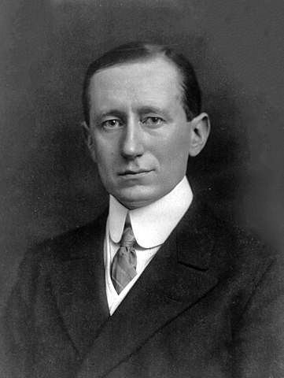

Mobile Communication

Introduction
The ability to communicate with people on the move has evolved remarkably since Guglielmo Marconi first demonstrated radio's ability to provide continuous contact with ships sailing the English channel. That was in 1897, and since then new wireless communications methods and services have been enthusiastically adopted by people throughout the world.

Guglielmo Marconi, the inventor of radio
Particularly during the past ten years, the mobile radio communications industry has grown by orders of magnitude, fueled by digital and RF circuit fabrication improvements, new large-scale circuit integration, and other miniaturization technologies which make portable radio equipment smaller, cheaper, and more reliable.Wireless communications is enjoying its fastest growth period in history,due to enabling technologies which permit wide spread deployment.
Historically.growth in the mobile communications field has come slowly, and has been coupled closely to technological improvements. The ability to provide wireless communicationsto an entire population was not even conceived until BellLaboratories developed the cellular concept in the 1960s and 1970s. With the development of highly reliable, miniature, solid-state radio frequency hardware in the 1970s, the wireless communications era was born.
The below figure shows that the first 35 years of mobile telephone saw little market penetration due to high cost and the technological challenges involved, but how, in the past decade, cellular telephone has been accepted by consumers at rates comparable to the television, and the video cassette recorder.

Cellular radio systems operate in an interference-limited environment and rely on judicious frequency reuse plans (which are a function of the market-specific propagation characteristics) and frequency division multiple access (FDMA) to maximize capacity.

The above figure shows Frequency spectrum allocation for the U.S. cellular radio service. Identically labeled channels in the two bands form a forward and reverse channel pair used for duplex communication between the base station and mobile. Note that the fonvard and reverse channels in each pair are separated by 45 MHz
A cellular system based on code division multiple access (CDMA) has been developed by Qualcomm, Inc. and standardized by the Thlecommunications Industry Association (TIA) as an Interim Standard . The ability of CDMA to operate with a much smaller signal-to-noise ratio than conventional narrowband FM techniques allows CDMA systems to use the same set of frequencies in every cell, which provides a large improvement in capacity
Examples of Mobile Radio Systems :
The term mobile has historically been used to classify any radio terminal that could be moved during operation. More recently, the term mobile is used to describe a radio terminal that is attached to a high speed mobile platform (e.g. a cellular telephone in a fast moving vehicle whereas the term portable describes a radio terminal that can be hand-held and used by someone at walking speed. Mobile radio transmission systems may be classified as simplex, half duplex or full-duplex. In simplex systems, communication is possible in only one direction. Paging systems, in which messages are received but not acknowledged, are simplex systems. Half-duplex radio systems allow two-way communication, but use the same radio channel for both transmission and reception.

Fundamentals of the Mobile Communication
Wireless Communications System Definitions
- Base Station : A fixed station in a mobile radio system used for radio communication with
mobile
stations. Base stations are located at the center or on the edge of a coverage region and consist of
radio
channels and transmitter and receiver antennas mounted on a tower.
- Control Channel : Radio channels used for transmission of call setup, call request, call
initiation, and other beacon or control purposes.
- Forward Channel : Radio channel used for transmission of information from the base station to
the
mobile.
- Full Duplex : Communication systems which allow simultaneous two-way communication.
Transmission
and reception is typically on two different channels (FDD) although new cordlessfPCS systems are using
TDD.
- Half Duplex : Communication systems which allow two-way communication by Systems using the
same
radio channel for both transmission and reception. At any given time, the user can only either transmit
or
receive information.
- Handoff : The process of transferring a mobile station from one channel or base station to
another.
- Mobile Station : A station in the cellular radio service intended for use while in motion at
unspecified locations. Mobile stations may be hand-held personal units (portables) or installed in
vehicles (mobiles).
- Mobile Switching center : Switching center which coordinates the routing of calls in a large
service area. In a cellular radio system, the MSC connects the cellular base stations and the mobiles to
the PSTN. An MSC is also called a mobile telephone switching office (MTSO).
- Page : A brief message which is broadcast over the entire service area, usually in a
simulcast
fashion by many base stations at the same time.
- Reverse Channel : Radio channel used for transmission of infonnation from the mobile to base
station.
- Roamer : A mobile station which operates in a service area (market) other than that from
which
service has been subscribed.
- Simplex Systems : Communication systems which provide only one-way communication.
- Subscriber : A user who pays subscription charges for using a mobile communications System.
- Transceiver :A device capable of simultaneously transmitting and receiving radio
Fundamentals of the Mobile Communication
Frequency division duplexing (FDD)
Frequency division duplexing (FDD) provides simultaneous radio transmission channels for the subscriber and the base station, so that they both may constantly transmit while simultaneously receiving signals from one another. At the base station, separate transmit and receive' antennas are used to accommodate the two separate channels. At the subscriber unit, however, a single antenna is used for both transmission to and reception from the base station, and a device called a duplexer is used inside the subscriber unit to enable the same antenna to be used for simultaneous transmission and reception. To facilitate FDD, it is necessary to separate the transmit and receive frequencies by about 5% of the nominal RF frequency, so that the duplexer can provide sufficient isolation while being inexpensively manufactured.
In FDD, a pair of simplex channels with a fixed and known frequency separation is used to define a specific radio channel in the system. The channel used to convey traffic to the mobile user from a base station is called the forward channel, while the channel used to carry traffic from, the mobile user to a base station is called the reverse channel. In the U.S. AMPS standard, the reverse channel has a frequency which is exactly 45 MHz lower than that of the forward channel, Full duplex mobile radio systems provide many of the capabilities of the standard telephone, with the added convenience of mobility. Full duplex and half-duplex systems use transceivers for radio communication. FDD is used exclusively in analog mobile radio systems and is described in more detail in
Fundamentals of the Mobile Communication
Time division duplexing (TDD)
Time division duplexing (TDD) uses the fact that it is possible to share a single radio channel in time, so that a portion of the time is used to transmit from the base station to the mobile, and the remaining time is used to transmit from the mobile to the base station. If the data transmission rate in the channel is much greater than the end-user's data rate, it is possible to store information bursts and provide the appearance of frill duplex operation to a user, even though there are not two simultaneous radio transmissions at any instant of time. TDD is only possible with digital transmission formats and digital modulation, and is very sensitive to timing. It is for this reason that TDD has only recently been used, and only for indoor or small area wireless applications where the physical coverage distances (and thus the radio propagation time delay) are much smaller than the many kilometers used in conventional cellular telephone systems.
Fundamentals of the Mobile Communication
Paging Systems
Paging systems are communication systems that send brief messages to a subscriber. Depending on the type of service, the message may be either a numeric message, an alphanumeric message, or a voice message. Paging systems are typically used to noti& a subscriber of the need to call a particular telephone number or travel to a known location to receive further instructions. In modern paging systems, news headlines, stock quotations, and faxes may be sent. A message is sent to a paging subscriber via the paging system access number (usually a toll-free telephone number) with a telephone keypad or modem. The issued message is called a page. The paging system then transmits the page throughout the service area using base stations which broadcast the page on a radio carrier.
Paging systems vary widely in their complexity and coverage area. While simple paging systems may cover a limited range of 2 km to 5 km, or may even be confined to within individual buildings, wide area paging systems can provide worldwide coverage. Though paging receivers are simple and inexpensive, the transmission system required is quite sophisticated. Wide area paging systems consist of a network of telephone lines, many base station transmitters, and large radio towers that simultaneously broadcast a page from each base station (this is called simulcasting). Simulcast transmitters may be located within the same service area or in different cities or countries. Paging systems are designed to provide reliable communication to subscribers wherever they are; whether inside a building, driving on a highway, or flying in an airplane.
The figure shows the Wide Area Paging System

Fundamentals of the Mobile Communication
Cellular Telephone Systems
A cellular telephone system provides a wireless connection to the PSTN for any user location within the radio range of the system. Cellular systems accommodate a large number of users over a large geographic area, within a limited frequency spectrum. Cellular radio systems provide high quality service that is often comparable to that of the landline telephone systems. High capacity is achieved by limiting the coverage of each base station transmitter to a small geographic area called a cell so that the same radio channels may be reused by another base station located some distance away. A sophisticated switching technique called a handoff enables a call to proceed uninterrupted when the user moves from one cell to another.
Figure shows a basic cellular system which consists of mobile stations, base stations and a mobile switching center (MSC). The Mobile Switching Center is sometimes called a mobile telephone switching office (MTSO), since it is responsible for connecting all mobiles to the PSTN in a cellular system. Each mobile communicates via radio with one of the base stations and may be handedoff to any number of base stations throughout the duration of a call. The mobile station contains a transceiver, an antenna, and control circuitry, and may be mounted in a vehicle or used as a portable hand-held unit, The base stations consist of several transmitters and receivers which simultaneously handle full duplex communications and generally have towers which support several transmitting and receiving antennas. The base station serves as a bridge between all mobile users in the cell and connects the simultaneous mobile calls via telephone lines or microwave links to the MSC. The MSC coordinates the activities of all of the base stations and connects the entire cellular system to the PSTN. A typical MSC handles 100,000 cellular subscribers arid 5,000 simultaneous conversations at a time, and accommodates all billing and system maintenance functions, as well. In large cities, several MSCs are used by a single carrier.
Communication between the base station and the mobiles is defined by a standard common air interface (CM) that specifies four different channels. The channels used for voice transmission from the base station to mobiles are called forward voice channels (PVC) and the channels used for voice transmission from mobiles to the base station are called reverse voice channels (RVC). The two channels responsible for initiating mobile calls are the forward control channels (FCC) and reverse control channels (RCC). Control channels are often called setup channels because they are only involved in setting up a call and moving it to an unused voice channel. Control channels transmit and receive data messages that carry call initiation and service requests, and are monitored by mobiles when they do not have a call in progress.

Figure shows an illustration of a cellular system. The towers represent base stations which provide radio access between mobile users and the Mobile Switching Center (MSC).


Fundamentals of the Mobile Communication
Frequency Reuses
Cellular radio systems rely on an intelligent allocation and reuse of channels throughout a coverage region [0et83]. Each cellular base station is allocated a group of radio channels to be used within a small geographic area called a cell. Base stations in adjacent cells are assigned channel groups which contain completely different channels than neighboring cells. The base station antennas are designed to achieve the desired coverage within the particular cell. By limiting the coverage area to within the boundaries of a cell, the same group of channels may be used to cover different cells that are separated from one another by distances large enough to keep interference levels within tolerable limits. The design process of selecting and allocating channel groups for all of the cellular base stations within a system is called frequency reuse or frequency planning

Figure shows Illustration of the cellular frequency reuse concept. Cells with the same letter use the same set of frequencies. A cell cluster is outlined in bold and replicated over the coverage area. In this example, the cluster size, N, is equal to seven, and the frequency reuse factor is 1/7 since each cell contains one-seventh of the total number of available channels
To understand the frequency reuse concept, consider a cellular system which has a total of S duplex channels available for use. If each cell is allocated a group of k channels (k cS), and if the S channels are divided among N cells into unique and disjoint channel groups which each have the same number of channels, the total number of available radio channels can be expressed as
S = kN
The N cells which collectively use the complete set of available frequencies is called a cluster. If a cluster is replicated M times within the system, the total number of duplex channels, C, can be used as a measure of capacity and is given
C = MkN = MS
As seen from equation , the capacity of a cellular system is directly proportional to the number of times a cluster is replicated in a fixed service area. The factor N is called the cluster size and is typically equal to 4, 7, or 12. If the cluster size N is reduced while the cell size is kept constant, more clusters are required to cover a given area and hence more capacity (a larger value of C) is achieved. A large cluster size indicates that the ratio between the cell radius and the distance between co-channel cells is large. Conversely, a small cluster size indicates that co-channel cells are located much closer together. The value for N is a function of how much interference a mobile or base station can tolerate while maintaining a sufficient quality of communications. From a design viewpoint, the smallest possible value of N is desirable in order to maximize capacity over a given coverage area (i.e.. to maximize C in equation (2.2)). The frequency reuse factor of a cellular system is given by I /N, since each cell within a cluster is only assigned II'N of the total available channels in the system.